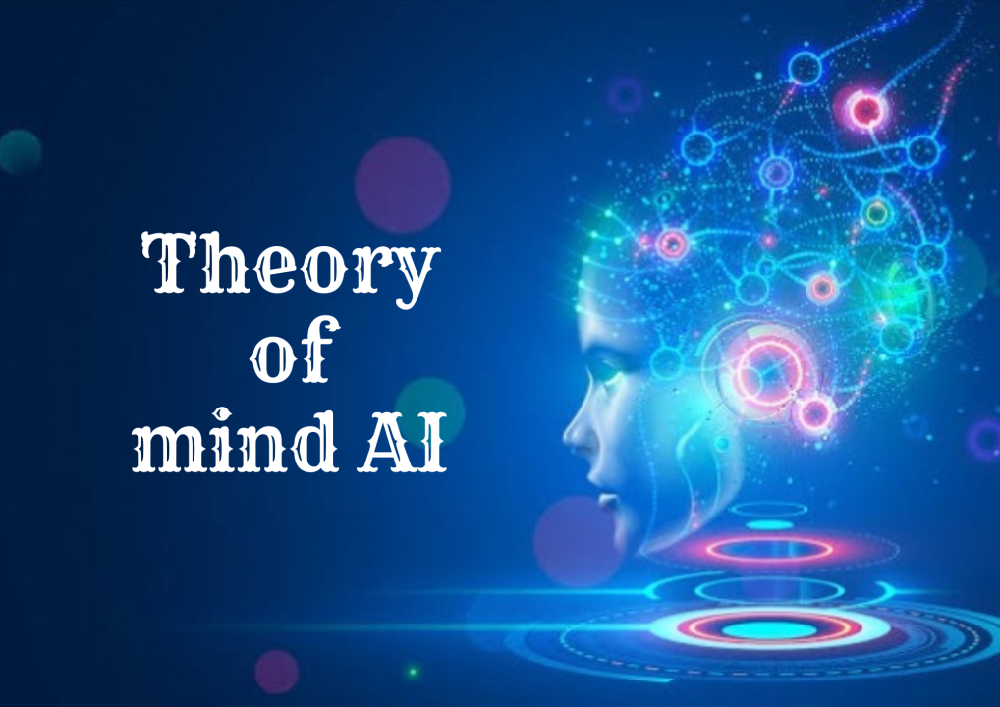

"Reaction machines" is a broad term encompassing various devices or systems designed to generate a response to a stimulus, input, or condition. The specific meaning depends on the context in which the term is used. Several possible interpretations include:
Limited memory consists of machine learning models that acquire knowledge from previously learned information, stored data, or events. Unlike reactive machines, limited memory learns from the past by observing actions or data to build experiential knowledge.
The "Theory of Mind" (ToM) denotes an individual's ability to attribute mental states—such as beliefs, intentions, desires, and emotions—to oneself and others. In the context of artificial intelligence (AI), a "Theory of Mind AI" refers to a system capable of understanding, interpreting, and responding to the mental states of other entities, whether humans or other AIs.
The concept of "self-aware AI" pertains to artificial intelligence systems that possess a degree of consciousness or self-awareness analogous to human self-awareness. Achieving true self-awareness in AI poses a complex and philosophical challenge beyond the current capabilities of existing technology. As of my last knowledge update in January 2022, no AI system has demonstrated genuine self-awareness.